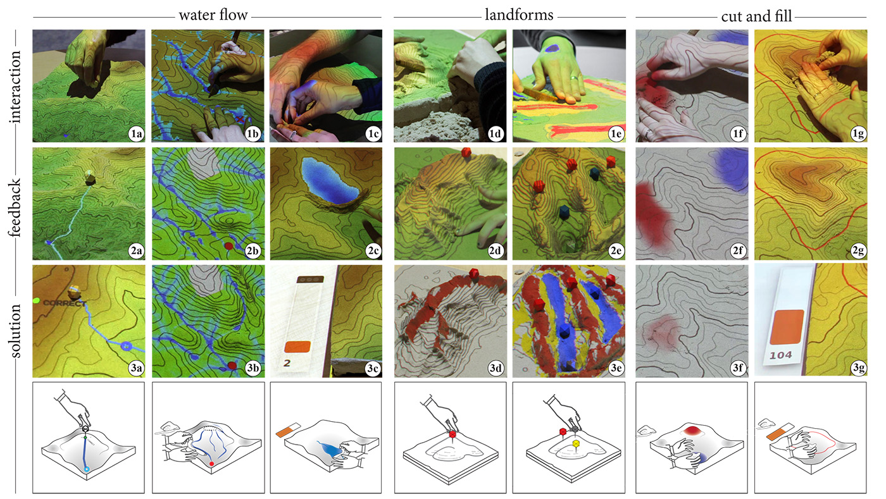

Intro
In this project we explored a novel and effective method for teaching about topography--or shape of terrain--and assessing 3-dimensional spatial learning using tangibles.
We used Tangible Landscape--a tangible interface for geospatial modeling--to teach multiple hands-on tangible lessons on the concepts of grading (i.e., earthwork), geomorphology, and hydrology. We examined students' ratings of the system's usability and user experience and tested students' acquisition and transfer of knowledge. Our results suggest the physicality of the objects enabled the participants to effectively interact with the system and each other, positively impacting ratings of usability and
task-specific knowledge building. Our findings can potentially advance the design and implementation of tangible teaching methods for the topics of geography, design, architecture, and engineering.
Tangible Landscape possesses the potential to transform preexisting
teaching methods within the fields of the hard sciences
(e.g., biology chemistry, physics, geography), social
sciences (e.g., sociology, human geology), and mathematics
by combining computer-based design, and embodiment. With
Tangible Landscape, users can physically interact with digital
models and simulations by sculpting, placing objects, or
sketching. These various modes of interaction enable
students to immediately see how they are changing terrain
properties like contours, hillslope steepness, or water flow. By
kinesthetically feeling and manipulating the shape of the topography,
while seeing projected geospatial simulations or
analyses, students can intuitively learn about 3D topographic
form, topographic representations (elevation colors, contour
lines), real-world manifestations of topography (e.g., landforms),
and how topography controls physical processes like
the flow of water.
Method
16 graduate students from a Landform, Grading, and Site
Systems course in the Department of Landscape Architecture
at North Carolina State University participated in this study
The study included three tasks focused on understanding (a)
water flow, (b) landforms, and (c) changing landscape surfaces
by cut and fill (i.e., earth moving).
The water flow lesson included three tasks: flowpath, channeling,
and ponding. For the flowpath task, participants were
asked to find the highest source point from which water will
flow into the target point in the landscape (Figure 1a).
The channeling task required participants to modify the terrain
surface–while making minimal changes to the landscapes–to
make water flow from the given source point to the given
target point. For the last task, ponding, participants were given a limited
amount of sand to build a damn on a stream to impound maximum
volume of water. They used their hands or sculpting
knife to make dams or depressions in the landscape (Figure
5-1c). The landforms lesson consisted of three sub-tasks: simple,
compound, and complex landforms. Each sub-task required
participants to create and identify given landforms; each subtask
was completed in three rounds of increasing difficulty.
The cut and fill, i.e., earth moving, lesson consisted of two
tasks: basic modeling using elevation difference feedback and
advanced modeling using elevation contours with numerical
feedback.
